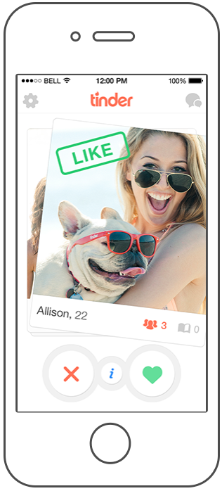
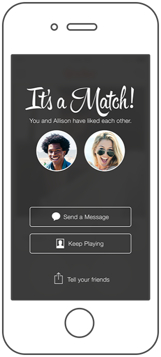
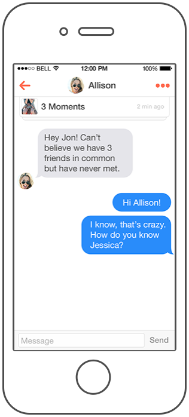
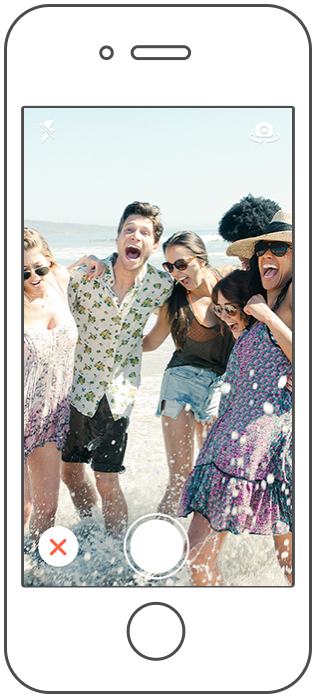
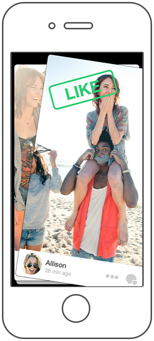

Anonymously "Like" or "Pass" on people Tinder Suggests.

If someone you've liked happens to like you back...

Chat with your matches inside the app.

Capture and share moments with all your mathches.

Like your matches' moments and see who liked yours.

tindAngular has no association with Tinder Inc or Facebook and is not responsible for what happens when you use this app.